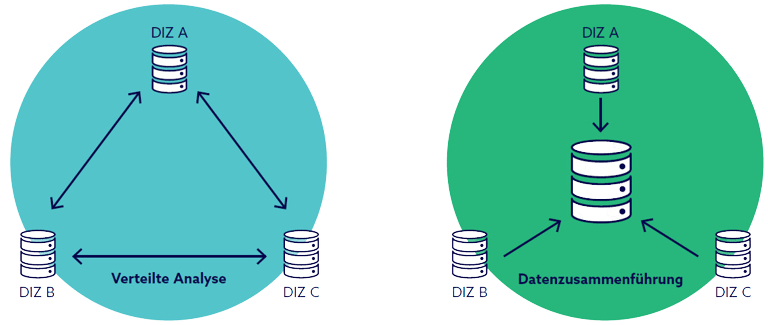

This project is funded by the Medical Informatics Initiative under the grant numbers 01ZZ2316A-O.
PrivateAIM © 2023
The analysis of health data plays a crucial role in medical research and enables more precise diagnoses, more effective treatments and future-oriented care. However, given the sensitivity of such data, careful handling is essential to ensure both legal requirements and the protection of patient privacy. This challenge is particularly evident in the context of training artificial intelligence (AI) models, where extensive data sets are necessary to obtain reliable results.
The PrivateAIM (Privacy-preserving Analytics in Medicine) method platform addresses precisely this interface and attempts to pave a balanced path between data protection and data use. It follows the principle of 'code to the data', in which the health data remain in the protected environments of the university hospitals and only the analysis algorithms are exchanged. This form of decentralized analysis ensures that data never leaves its secure environment. Patients' identities and sensitive health information thus remain fully protected and cannot be viewed by researchers at any time. To achieve this goal, the PrivateAIM project is dedicated to developing customized AI methods, risk models and federation mechanisms. These innovations are incorporated into the newly developed software platform FLAME (Federated Learning and Analysis in Medicine) and thus form the technological core for secure, distributed evaluations in the Medical Informatics Initiative (MII).
The PrivateAIM consortium brings together a variety of experts from university medicine and other institutions. A total of 17 partners from all four MII consortia, including three MII-funded junior research groups, are involved in the project. Special emphasis is placed on the active involvement of patients and other stakeholders to bring multi-layered perspectives to the project. The consortium is working hard to explain the technical procedures for privacy-compliant federated evaluations and machine learning (ML) to citizens in a comprehensible way. The goal is to communicate the security guarantees and protection that these methods offer in a transparent and comprehensible manner. To this end, patients and the general public are educated about PrivateAIM's work through easy-to-understand information materials. In addition, patients and other stakeholders will be involved in workshops from the outset to actively shape the design, implementation, and evaluation of privacy-friendly federated methods.
Before the results of the project are put into practice, FLAME will be put through its paces both with benchmark data sets and in real applications. Broad acceptance is targeted through a multi-stage rollout concept involving the data integration centers of all MII consortia. The provision as open source software and the cooperation with related projects contribute significantly to the sustainability of the project. Over the next four years, the PrivateAIM method platform with FLAME in the MII will offer an additional possibility to analyze medical data efficiently and securely across locations. Especially for modern AI methods, this will open up the urgently needed extensive data volumes without neglecting the central aspect of data protection for patients.
This project is funded by the Medical Informatics Initiative under the grant numbers 01ZZ2316A-O.
PrivateAIM © 2023